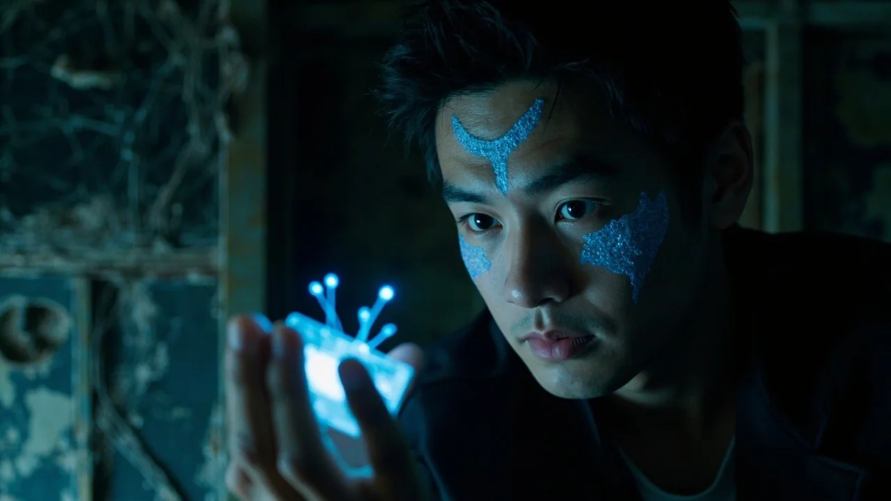
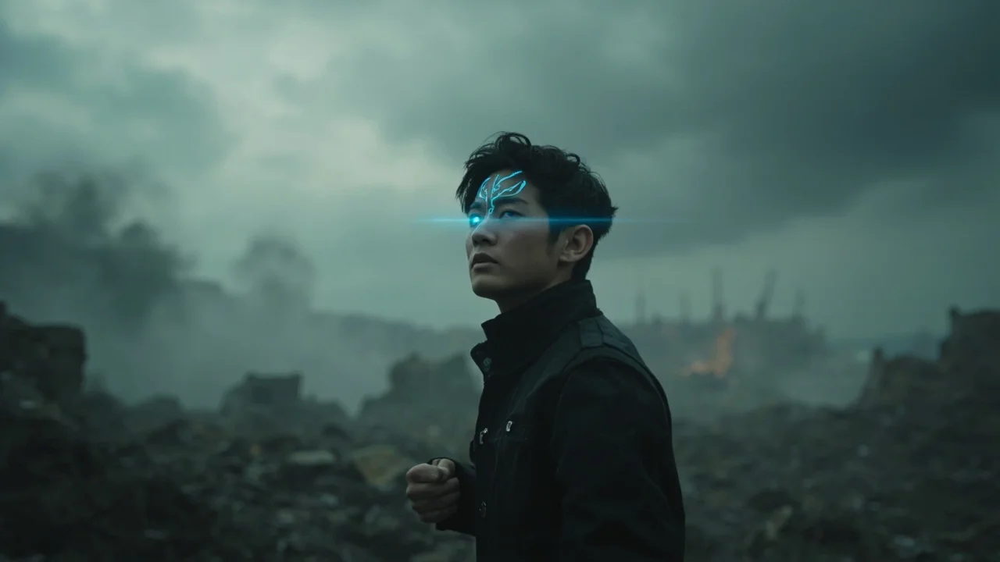

第57章：輪迴之謎
🎧 點擊播放有聲朗讀
🎧 點擊播放有聲朗讀
末法元年一百四十二年，鉛雲籠罩天穹。林塵蜷縮在廢棄大樓的機房深處，裹著破舊軍毯，手握一把銹蝕的能量刀。十七年的廢土掙扎，讓這個二十歲的少年早已學會了在黑暗中人般生存。望向下方黑市的黑暗，他知道那裡有「破序者」出沒——那些在末法時代中變異的存在，危險而不可預測。

在厚厚的灰塵與蜘蛛網下，林塵找到了那枚嵌在牆體內的黑色晶片。拇指大小的它邊緣閃爍著微弱的藍色光點，彷彿在沉睡中緩緩呼吸。「古代靈芯技術……真的存在？」當指尖觸碰到晶片表面的一刻，一股微弱卻異常清晰的電流瞬間竄入他的腦海深處，冰冷的女聲隨即響起：「靈芯核心受損百分之四十三，正在啟動緊急修復程序……」
「確定連結。」林塵毫不猶豫。下一秒，整個世界陷入死寂。晶片化作一道溫暖光點，融入他的眉心，在腦海深處展開一副奇異的全息視界。生命值、精神波動頻率、靈氣容量、靈脈狀態——一排排系統數據清晰呈現。「修煉模擬」「功法安裝」「資料掃描」「靈氣構圖」……這不僅是輔助工具，而是一個完整的修仙系統！
就在林塵沉浸在喜悅中時，一股劇烈的靈壓從大樓下方席捲而來。「偵測到四級靈壓正在快速接近，威脅等級：高。是否啟動『模擬逃生』功能？」林塵毫不猶豫：「啟動！」瞬間，整棟大樓的三維結構圖、最佳逃跑路線指引浮現在腦海中。他如靈活的魚般穿越通風管道，身後是破序者撕裂金屬牆壁的恐怖聲響。96.7%逃逸成功率——他做到了。

林塵站在廢墟之中，望向那片被鉛雲籠罩的天空。掌心那道淡藍色紋路在微微閃爍，那是靈芯系統與他融合的印記。從被遺棄的孤兒到一無所有的流浪者，十七年來他第一次看見命運的曙光。「我要用這枚靈芯，修成永恆。我要重建遠古的修真文明，我要讓這個世界——重新燃起靈氣的火焰。」他的眼中，堅定如永不熄滅的星辰。